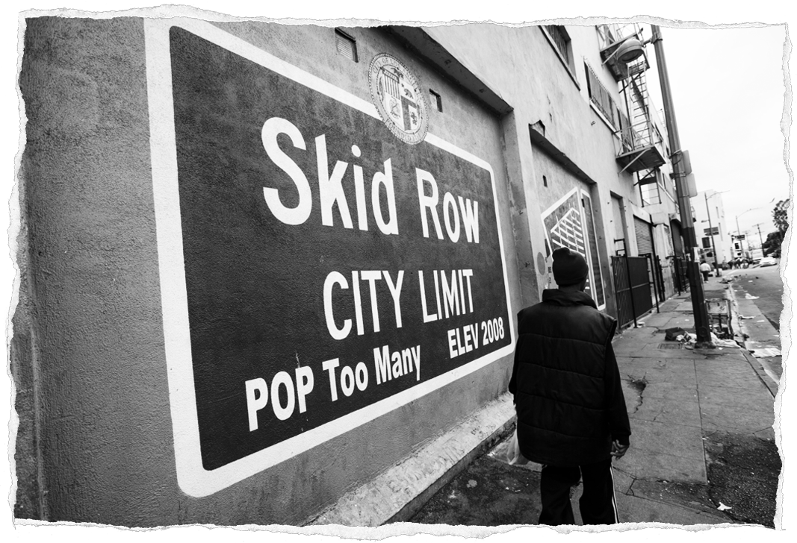

The digital age has set in motion a rapid wave of widespread technology adoption. As a result, in the last 20 years, many of the decisions we make have become supported and/or automated by technological frameworks. This dramatic shift over such a short period of time has had a profound impact on the decisions we make and how we act upon them. The impact of technology extends to choices as simple as how a shopping list is prepped, to more complex matters such as deciding who should receive housing when it is in short supply.
The homelessness crisis is a multifaceted issue, so it will be difficult to pinpoint the negative effects of technology. To help explain this, the section will be separated into two parts, each using case studies to support the arguments made.
Societal issues are often the result of many smaller compounding factors. Take for example the UK housing crisis, which arguably began when Margaret Thatcher introduced the Right to Buy scheme in 1980.[16] Long before technology became as ubiquitous as it is today, the Right to Buy scheme gave council residents the power to purchase their home at a reduced rate. The expectation was that for each home bought a new one would be built. Although a stipulation in the right to buy scheme meant that only 75% of the sale revenue from each home would go to local councils. These funds would be insufficient for building replacement homes making it an impossible task. Today, almost 3 million council homes have been sold and removed from the potential social housing pool.[17] Since its introduction in 1980, we've seen further compounding factors such as the 2008 financial crisis which led to the collapse of the housing market and mass unemployment.[18] Technology has also played a part in homelessness with the rise of platforms such as Airbnb.
Airbnb is a revolutionary online rental marketplace that allows people to rent out spare properties or rooms to guests. Since its founding in 2008; Airbnb has seen a meteoric rise to popularity. As of 2020 the company has reported over 7 million listings globally[19] and is valued at roughly $38 billion (pre-Covid 19 pandemic).[20]
The success of Airbnb can be attributed to three factors according to Srikanth Beldona, a professor of hospitality and the University of Delaware. Firstly, Airbnb lets hosts set their own prices, meaning it is often less costly than hotels.[21] Secondly, juxtaposing the reviews of Airbnb with those of hotels, it is evident that Airbnb provides a more personal experience. Further analysing Airbnb reviews, customers frequently use language relating to community. In contrast, when reviewing hotels customers tend to comment on service.[22] Thirdly, Airbnb lets travellers live like locals by providing accommodation located outside of city business sectors.[23] Given the scale of the company's success, it's evident that Airbnb has radically changed how we travel, access and find accommodation.
Unfortunately, Airbnb has also had a negative impact on local housing markets. This is known as the "Airbnb effect."[24] The Airbnb effect is a term used to describe how the professionalization of Airbnb has resulted in increased home and rent prices. Since the success of Airbnb, there has been a trend of landlords moving their properties out of the private housing market in favour of Airbnb. Many have even bought properties with the sole intention of letting them on Airbnb.[25] This trend has become so prevalent that in parts of the UK there is an Airbnb listing for every four homes in the area.[26] The removal of these properties from the housing market causes the supply to shrink. In turn, this causes prices to increase as supply decreases and demand remains unchanged.
A collaborative study between the National Bureau of Economic Research, California State University and Marshall Business School found that for every 1% increase in Airbnb listings, home prices would rise 0.026% and rent prices would rise 0.018%. This may not seem like a lot, but these small increases compound. The reality is that these increases combine to account for a fifth of all rental price growth.[27] An increase of this extent has the potential to force many of those already experiencing poverty into homelessness. As it stands 3 million UK renting households are only a single paycheck away from homelessness.[28] Increases in rent prices will negatively impact a person's quality of life at best and at worst cause mass homelessness.
Organisations and businesses don’t set out with the goal of punishing the poor or reinforcing homelessness. However, often it is the case that the chasing of goals such as profit takes priority, even if it means harming those experiencing poverty. Even tools built with the intention of helping the homeless can have negative effects. An example of this is the Los Angeles County CES (Coordinated Entry System). CES was developed with the intention of ensuring that those that needed housing the most were prioritised.[29]
CES matches those most in need with the housing they need via two processes. Firstly, CES identifies those at risk, using the VI-SPDAT (Vulnerability Index-Service Prioritisation Decision Assistance Tool). The VI-SPDAT is an extensive survey/interview that collects personal information on unhoused individuals.[30] This survey data is then run through an algorithm to assign the individual with a score between 1 and 17. The higher the number, the higher the risk. Those scoring above an 8 qualify for housing support.[31] Secondly, CES finds the most suitable candidates for available housing units. CES achieves this using a second algorithm that identifies the person with the highest VI-SPDAT score who also meets the unit's eligibility criteria.[32]
It's at this VI-SPDAT stage where we start to see the first negative influences of the CES. The largest fault of the VI-SPDAT algorithm is that it's influenced by human opinion, which leads to inaccuracy. The questions asked during the VI-SPDAT stage are deeply personal.[33] Candidates may not always feel comfortable answering truthfully, especially when answering to a surveyor they don't know, and their questions are potentially incriminating. It is this human influence that organisations such as Pathway to Home cite as the cause of vastly different VI-SPDAT scores between homeless service providers.[34] Adding to the impact, the CES is the only route to housing for most individuals, meaning that if the system does not serve you well, you are not prioritised and therefore lessening the chances for you to secure accommodation.[35] The concerns don't end at the system's effectiveness, there are additional concerns surrounding the privacy of the CES. Data collected by the CES is stored for 7 years after collection.[36] During this time the data is shared with 168 different organisations including law enforcement.[37] Unlike other data held by companies, police can access CES data without a warrant.[38] The ease of data access coupled with data that has the potential to incriminate sets a dangerous precedent for tools like CES. Candidates are faced with choosing between admitting guilt of a crime to the police or scoring lower VI-SPDAT scores, making it harder to get housed.
It can be easy to think of this as an isolated issue to LA County. However, if similar systems were adopted elsewhere the same issue would occur. In Northern Ireland, for example, the PSNI (Police Service Northern Ireland) have an agreement with the Housing Executive to share applicant data, meaning it would be facing the exact same set of issues as LA County if they were to adopt the same system.[39]